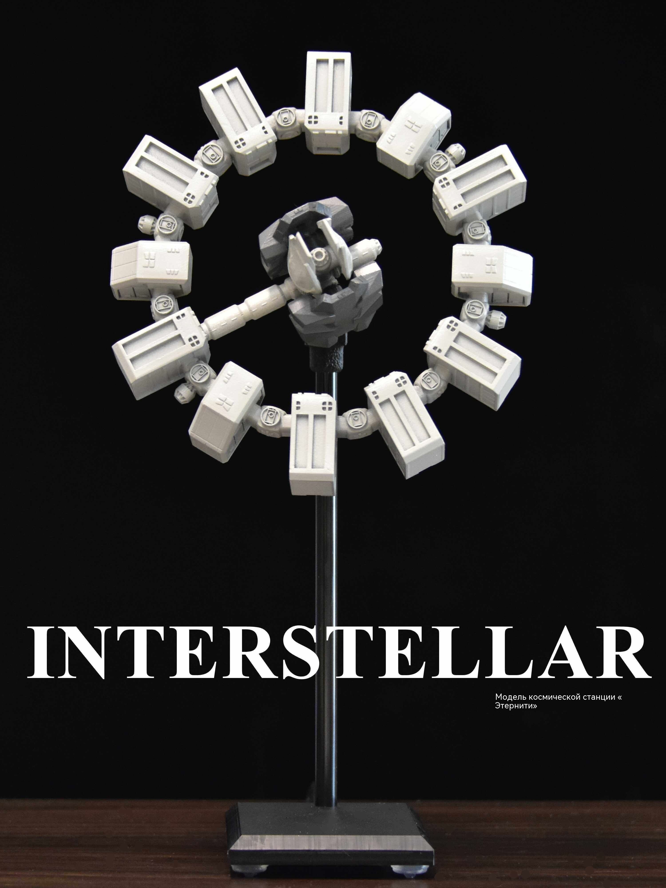

Где посмотреть

Похожие фильмы
| Фильм | Чем похож |
|---|---|
| Начало (Inception) | Тот же режиссёр, игра со временем и реальностью |
| Гравитация (Gravity) | Реалистичный космос и выживание |
| Марсианин (The Martian) | Научный подход к выживанию на другой планете |
Страницы о фильме и фильмы, которые стоит посмотреть дальше

| Фильм | Чем похож |
|---|---|
| Начало (Inception) | Тот же режиссёр, игра со временем и реальностью |
| Гравитация (Gravity) | Реалистичный космос и выживание |
| Марсианин (The Martian) | Научный подход к выживанию на другой планете |